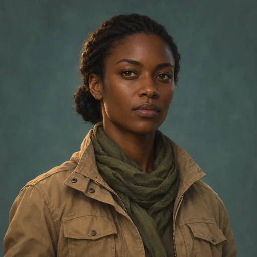
Amina Diallo
Scout 1 · Mobile reconnaissance
Fit / Hunter
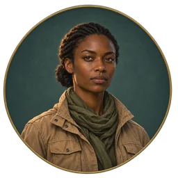
16 agents across all 12 base classes, plus one animal partner. Portraits 512 px; matching token textures 256 px.

Scout 1 · Mobile reconnaissance
Fit / Hunter

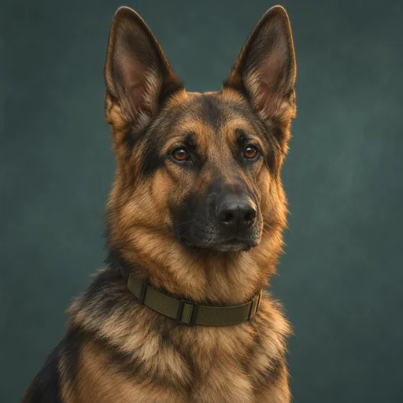
Animal Partner · Tomas Aalto
Search-and-rescue dog
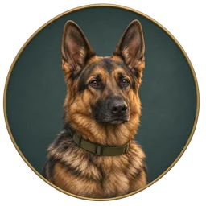
Snoop 1 · Signals and surveillance
Clever / Journalist
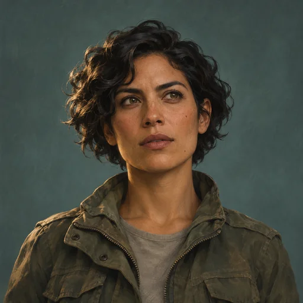
Explorer 1 · Field researcher
Brainy / Outdoorsman
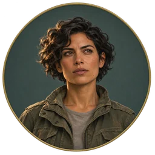
Pointman 1 · Team coordinator
Reliable / Instructor
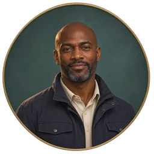
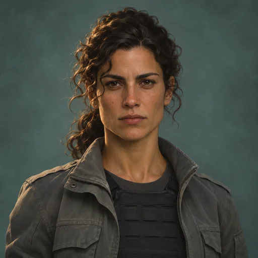
Soldier 1 · Ranged security
Fit / Mercenary
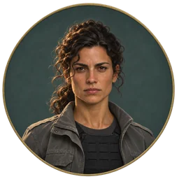
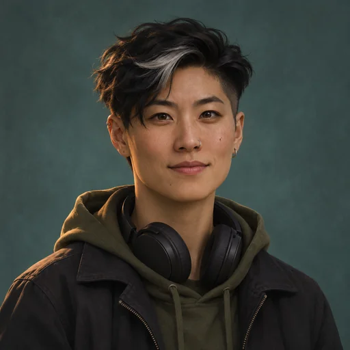
Hacker 1 · Network intrusion specialist
Brainy / Geek
Faceman 1 · Social infiltrator
Graceful / Grifter
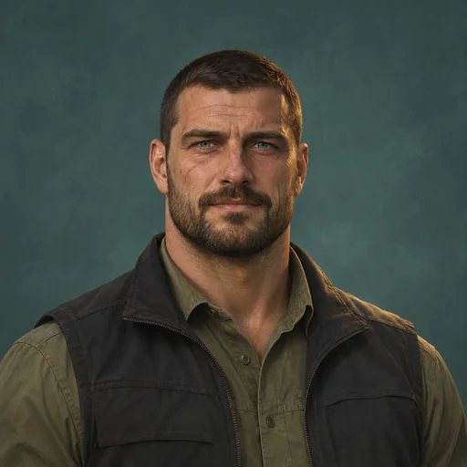
Soldier 1 · Close protection
Burly / Warrior
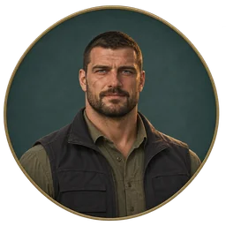
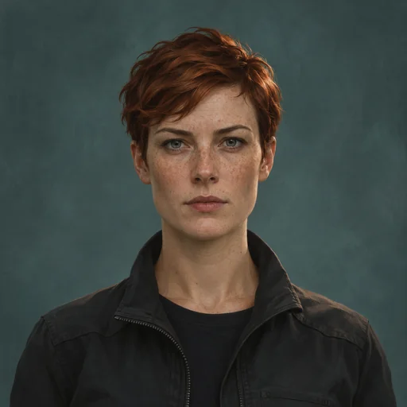
Intruder 1 · Covert entry specialist
Agile / Criminal
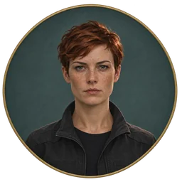
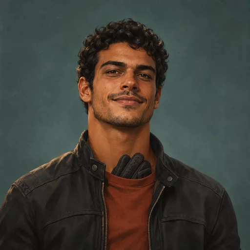
Wheelman 1 · Ground extraction driver
Daring / Hot Rodder
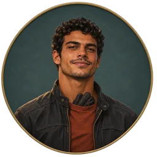
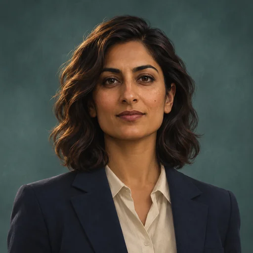
Advocate 1 · Institutional negotiator
Convincing / Authority
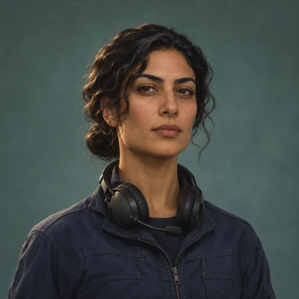
Wheelman 1 · Air rescue pilot
Agile / Pilot
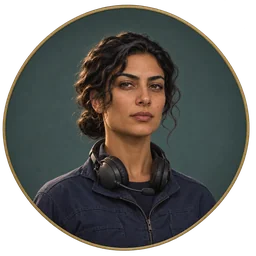
Scientist 1 · Field physician
Brainy / Doctor
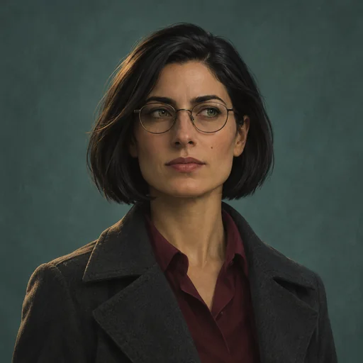
Faceman 1 · Investigative cover specialist
Shrewd / Journalist
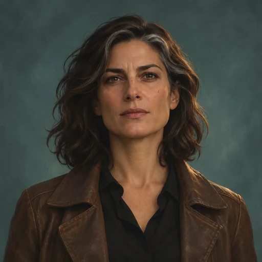
Sleuth 1 · Case-building detective
Shrewd / Investigator
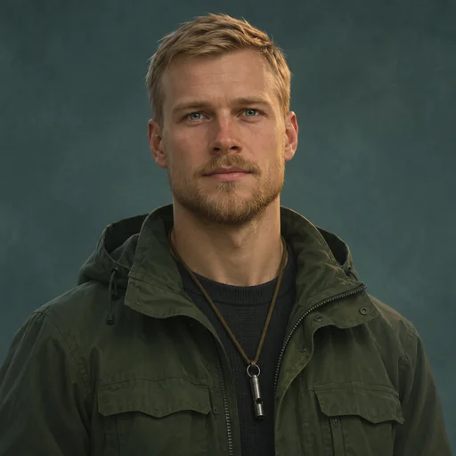
Scout 1 · Tracker and animal handler
Vigilant / Outdoorsman
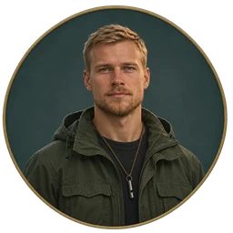